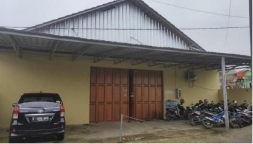

Azkia Shop 35
Sukabumi
Sejarah Perusahaan
Adzkia Shop35 adalah sebuah perusahaan yang bergerak dibidang manufaktur, yang berada di Kp. Cipetir RT/RW 01/01. Desa Priangan Jaya, Kecamatan Sukalarang, Kabupaten Sukabumi, Jawa Barat. Adzkia Shop35 didirikan oleh Bapak Dzoel Fikri Setiawan, yang pada saat itu berusia 22 tahun. Beliau sebelumnya bekerja menjadi reseller karpet bulu rasfur. Setelah memiliki pemahaman jauh tentang karpet bulu rasfur, serta memiliki modal akhirnya beliau memutuskan untuk mendirikan usaha dirumahnya sendiri. Maka didirikanlah Adzkia Shop35 pada 10 Desember 2016. Dengan dibantu adiknya, dan memperkerjakan tiga orang tetangganya. Dari setiap kata Adzkia Shop35 memiliki makna yaitu kata “Adzkia” adalah nama keberkahan, kata ‘‘Shop’’ bermakna toko dan angka ‘‘35’’ merupakan nomor yang cepat diingat oleh pelanggan. 44 Di tahun 2017,
Bapak Dzoel Fikri Setiawan mulai melakukan penjualan di online Shop Lazada. Bertahan selama satu tahun permintaan karpet semakin meningkat, sehingga Bapak Dzoel Fikri Setiawan menyewa gudang didaerah Sukaraja dengan karyawan 15 orang. berkat kegigihan dan keuletannya dalam menjalankan usahanya, dan semakin besar minat konsumen akan karpet bulu rasfur. Sehingga di tahun ditahun 2019, Bapak Dzoel Fikri Setiawan mempunyai pabrik sendiri dan 36 orang karyawan. Adzika Shop35 memproduksi barang berdasarkan pesanan dan menyediakan produk jadi tanpa pesanan serta dapat melayani desain atau model sesuai dengan permintaan konsumen seperti karpet bulu rasfur, karpet bulu rasfur karakter, bantal karakter, sprei, gorden, dan kasur gender. Adzkia Shop35 mempunyai produk unggulan, yaitu karpet bulu rasfur polos yang banyak diminati dan dipesan oleh konsumen. Untuk perekrutan karyawannya hanya warga sekitar saja, karena ingin membantu dan menyediakan lapangan pekerjaan untuk warga sekitar.
Visi dan Misi

Visi dan Misi Visi Perusahaan Menjadikan Adzkia Shop35 sebagai perusahaan besar yang dikenal diseluruh Indonesia dan menjadikan perusahaan penghasil produk-produk yang berkualitas, terdepan dan terpercaya. Misi
Perusahaan Terdapat misi utama yang meliputi: 1. Meningkatkan kepuasan konsumen 2. Menyediakan produk yang bermutu dan unggul 3. Menyediakan poduk inovatif dengan harga terjangkau 4. Memberikan pelayanan terbaik unuk menjaga kepercayaan konsumen. 5. Meningkatkan pemasaran dengan bekerja sama dengan reseller-reseller seluruh Indonesia.
Bahan Produksi
Karpet Bulu Rasfur Adapun bahan yang digunakan dalam produksi bulu rasfur adalah sebagai berikut: 1. Kain bulu rasfur karindo 2. Kain Hitam (Puring) 3. Benang 4. Resleting 5. Busa
Ruang pemotong bahan baku dan penjahitan

Ruang Quality Control dan Pengemasan

adalah ruang pengontrolan kualitas barang
image galery